Edit these two faces as a single source. The render script imposes 10 fronts on page 1 and 10 backs on page 2 for duplex printing.

{{name}}
Math educator
Patient, thoughtful math support for homeschool and public school students.
{{location}}{{phone}}{{email}}{{website}}
{{name}}
Percussionist & drum educator
Lessons, workshops, and ensemble coaching rooted in living musical traditions.
Cuban · Brazilian · West African